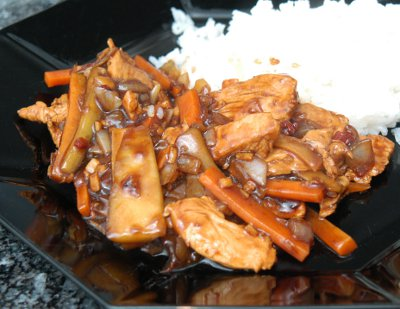

| Zutaten für 4 Personen: | |
| 300 g | Pouletbrüstchen |
| 1 | rote Chilischote |
| 2 | kleine Frühlingszwiebeln oder Schalotten |
| 250 g | Salatgurke (ca. 1/2 Gurke) |
| 250 g | Kürbis |
| 1 | Knoblauchzehe |
| 1 | kleines Stück Ingwer |
| 2 El | Sojasauce |
| 2 El | Reiswein oder Sherry |
| 1 Prise | Zucker |
| 1/2 dl | Hühnerbouillon |
| 1 Prise | Sichuanpfeffer |
| 1 Tl | Maizena |
| 3-4 El | Erdnussöl |
| 1 Tl | Weissweinessig |
Braucht ca 30 Minuten.
Die Pouletbrüstchen zuerst in dünne Scheiben, dann in Streifen schneiden.
Die Chilischote der Länge nach halbieren, Samen und Scheidewände entfernen und fein hacken. Die Frühlingszwiebeln oder Schalotten rüsten und ebenfalls hacken. Gurke und Kürbis schälen und die Kerne sowie schwammiges Fleisch entfernen. Das Gemüse in dünne Stengelchen - etwa in der Grösse der Fleischstreifen - schneiden.
Den Knoblauch und den Ingwer schälen und sehr fein hacken. Mit Sojasauce, Reiswein oder Sherry, Zucker, Bouillon, Sichuanpfeffer und Maizena verrühren.
In einem Wok oder in einer Bratpfanne das Öl erhitzen. Das Fleisch in 2 Portionen je 2 Minuten braten. Herausnehmen und beiseite stellen.
Im Bratensatz Chilischote, Frühlingszwiebeln oder Schalotten, Gurke sowie Kürbis unter Rühren etwa 2 Minuten braten. Die vorbereitete Würzsauce sowie das Fleisch beifügen, aufkochen und mit dem Essig sowie nach Belieben etwas Sojasauce abschmecken.
d'Chuchi 1-2/99 S.34
Schmeckt Ausgezeichnet! RE, Jan 2011
@LINKBACK_TAG@ @WAKELOCK@